# Load libraries
library(visreg, warn.conflicts=FALSE)
library(ggplot2, warn.conflicts=FALSE)
library(emmeans, warn.conflicts=FALSE)
library(lmerTest, warn.conflicts=FALSE)Lab 12 Mixed effects
1 Objectives
Load and examine data for several mixed effects experimental designs
Fit a mixed effects models to data
Exaluate the outcome of using random effects in linear models
Practice graphing paired and mixed effects data
Evaluate statistical results for linear mixed effects models
Data for all labs (unzip to your working directory)
2 Start a script!
For this and every lab or project, begin by:
starting a new script
create a good header section and table of contents
save the script file with an informative name
set your working directory
Aim to make the script useful as a future reference for doing things in R - this will come in handy for projects and assessments!
3 Linear mixed-effects models
In this lab we will fit linear mixed-effects models to data in R. Linear mixed-effects models are used when you have random effects, which occurs when multiple measurements are made on randomly sampled units. The measurements from these sampled units are not independent random samples on their own. Instead, the units or groups are assumed to be randomly sampled from a larger “population” of groups. Example situations include:
When you divide up plots and apply separate treatments to the parts (plot is the random group)
When your sampling design is nested, such as quadrats within transects; transects within woodlots; woodlots within districts (transects, woodlots, and districts are all random groups)
When you take measurements on related individuals (family is the random group)
When you measure subjects repeatedly over time (subject is the random group)
Linear models for mixed effects are implemented in the R command lme4 and lmerTest package (lmerTest includes lme4 plus additional functions). An alternative option is to use the lme method in the nmle package. The methods used to calculate approximate degrees of freedom in lme4 are a bit more accurate than those used in the nmle package, especially when sample size is not large.
To begin using methods for fitting linear mixed-effects models, install (if you have not already done so) and load the {lmerTest} package.
4 Repeatability of a sexual signal trait
This data set was extracted from a paper by Griffith and Sheldon (2001, Animal Behaviour 61: 987–993), who measured the white forehead patch of 30 male collared flycatchers in two years on the Swedish island of Gotland. The patch is important in mate attraction, but varies in size from year to year. Our goal here will be to estimate the repeatability of patch length (mm). The data are in the file "flycatcher.csv".
4.1 Read and examine the data
Read the data from the file.
View the first few lines of data to make sure it was read correctly.
Create a plot showing the pair of measurements for each individual flycatcher in the two years of study. You can try to make the kind of dot plot I showed in lecture. Is there evidence of measurement variability between years?
4.2 Fit a linear mixed-effects model
Fit a linear mixed-effects model to the data, treating the individual birds as the random groups. Note: The two measurements on each bird were taken in successive years of the study. For simplicity here, do not include year in the model. (Okay, if you really want to try including year in the model, go ahead. Just make sure to convert it to a character or factor in R so it is not treated as a numeric variable. Recalculate repeatability with this model as described in steps (2) and (3) below. How is the interpretation of repeatability changed?)
Extract parameter estimates (coefficients) from the saved
lmer()object (the command is the same one we used with lm() to get the coefficients table). Inspect the output for the random effects. What are the two sources of random variation? What does the fixed effect refer to?In the output, examine the standard deviations for the random effects. There should be two standard deviations: one for “(Intercept)” and one for “Residual”. This is because the mixed effects model has two sources of random variation: variation among repeat measurements within birds, and true variation among birds in their patch lengths. Which of these two sources corresponds to “(Intercept)” and which to “Residual”?
Also examine the output for the fixed effect results. The only fixed effect in the model formula is the grand mean of all the patch length measurements. It is called “(Intercept)”, but don’t confuse with the intercept for the random effects. The fixed effect output gives you the estimate of the grand mean and a standard error for that estimate. Notice how the fixed effect output provides estimates of means, whereas the random effects output provides estimates of variances (or standard deviations).
Extract the variance components from the fitted model and estimate the repeatability of patch length from year to year*.
Interpret the measure of repeatability obtained in the previous step. If the repeatability you obtained is less than 1.0, what is the source of the variation among measurements within individuals. Is it measurement error alone?
Produce a plot of residuals against fitted values. Notice anything odd? There sees to be a slightly positive trend. This isn’t a mistake, but results from “shrinkage” of the best linear unbiased predictors (BLUPs). Consult the lecture material for information on what is happening.
* 0.776.
4.2 Suggested solutions
Read and examine the data.
# Load your data
flycat <- read.csv("data/flycatcher.csv",
stringsAsFactors = FALSE)
head(flycat) bird patch year
1 1 10.5 1998
2 2 10.6 1998
3 3 8.7 1998
4 4 8.6 1998
5 5 9.0 1998
6 6 9.3 1998# These commands produce a type of "dot plot"
# This is useful to compare variation AMONGST individuals
# and WITHIN individuals for Patch length
stripchart(patch ~ bird, data = flycat, vertical = TRUE, pch = 16,
cex = 1.5, las = 2, col = "blue",
xlab = "Individual bird", ylab = "Patch length (mm)")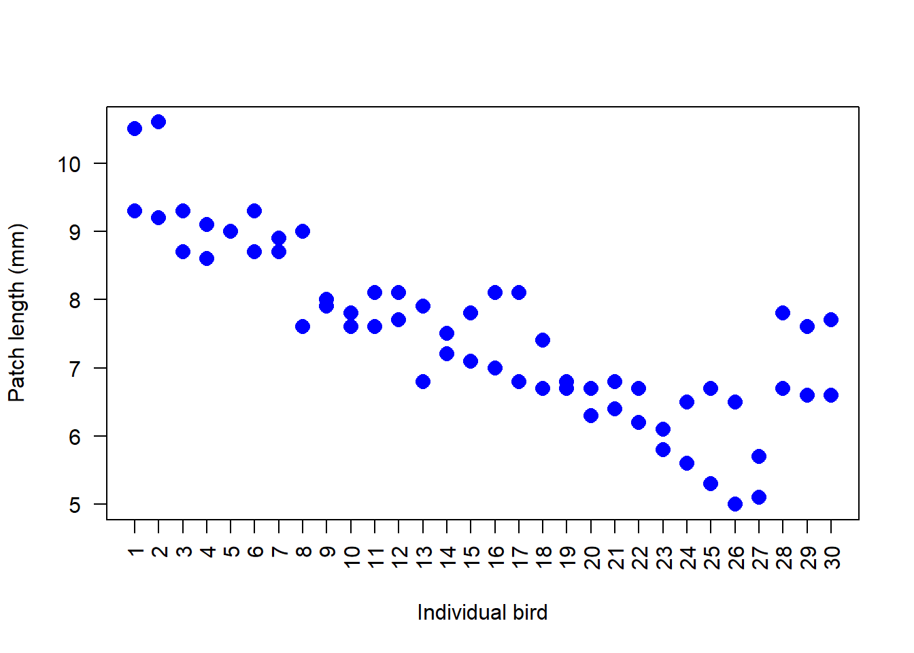
# A different way to display paired data is with an interaction plot for pairs
# A base R version
interaction.plot(response = flycat$patch,
x.factor = flycat$year,
trace.factor = flycat$bird,
legend = FALSE, lty = 1, col = "blue",
xlab = "Year",
ylab = "Patch length (mm)",
type = "b", pch = 16, las = 1, cex = 1.0)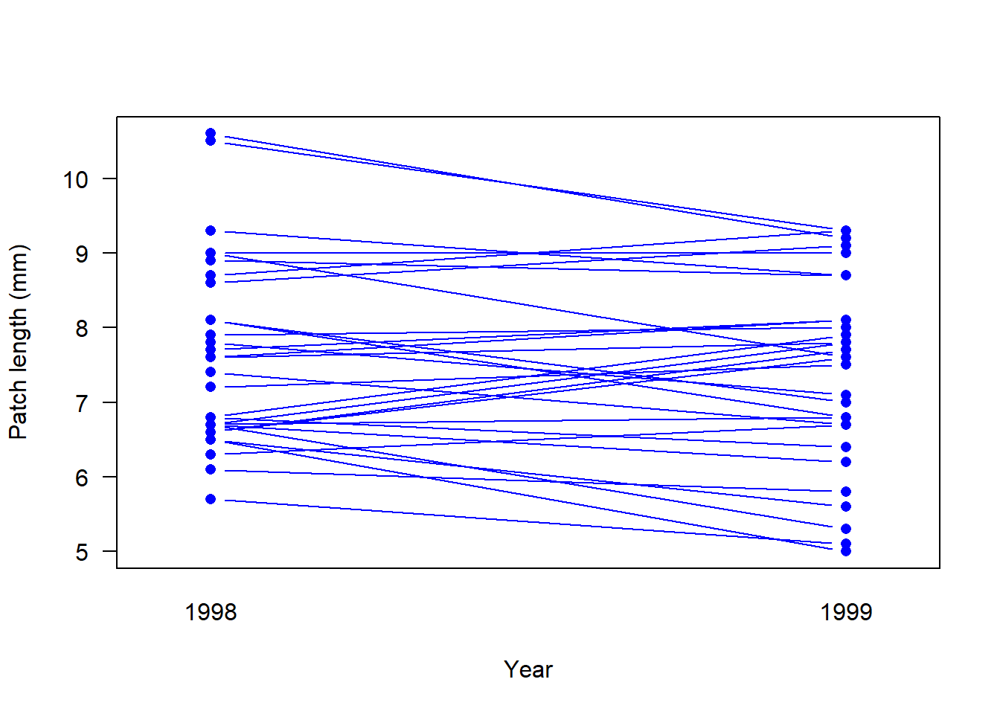
# A ggplot version
ggplot(flycat, aes(y = patch, x = factor(year))) +
geom_point(size = 4, col = "blue", alpha = 0.5) +
geom_line(aes(group = bird)) +
labs(x = "Year", y = "Patch length (mm)") +
theme_classic()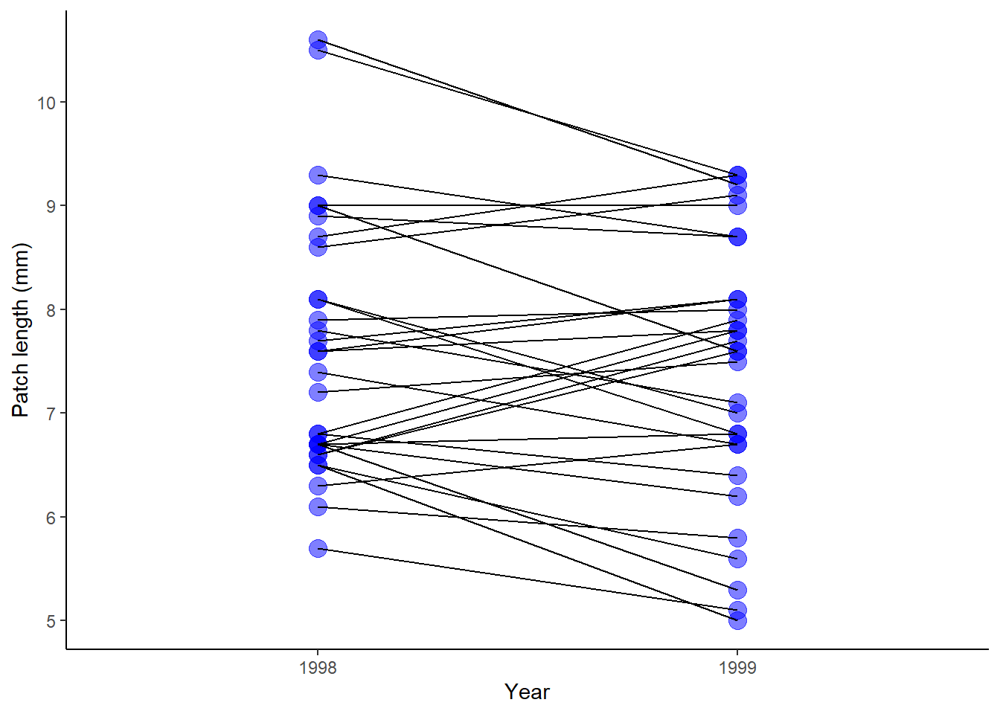
Fit a linear mixed effects model. The output from summary() used on a linear model object will show two sources of random variation: variation among individual birds (bird Intercepts), and variation among the repeat measurements made on the same birds (Residuals). An estimated variance and standard deviation are given for each source. The fixed effect is just the mean of all birds — another “Intercept”.
# 1. Mixed effects model
# (1|bird) identifies bird as the random effects variable
z <- lmer(patch ~ 1 + (1|bird), data = flycat)
# 2. Parameter estimates
summary(z)Linear mixed model fit by REML. t-tests use Satterthwaite's method [
lmerModLmerTest]
Formula: patch ~ 1 + (1 | bird)
Data: flycat
REML criterion at convergence: 171
Scaled residuals:
Min 1Q Median 3Q Max
-1.62368 -0.58351 0.03328 0.51009 1.67263
Random effects:
Groups Name Variance Std.Dev.
bird (Intercept) 1.243 1.1150
Residual 0.358 0.5983
Number of obs: 60, groups: bird, 30
Fixed effects:
Estimate Std. Error df t value Pr(>|t|)
(Intercept) 7.5100 0.2177 29.0000 34.49 <2e-16 ***
---
Signif. codes: 0 '***' 0.001 '**' 0.01 '*' 0.05 '.' 0.1 ' ' 1# 5. Variance components and repeatability
VarCorr(z) Groups Name Std.Dev.
bird (Intercept) 1.11504
Residual 0.59833 # Repeatability
1.11504^2/(1.11504^2 + 0.59833^2)[1] 0.7764342# 7. Plot of residuals against fitted values
plot(z, col="blue")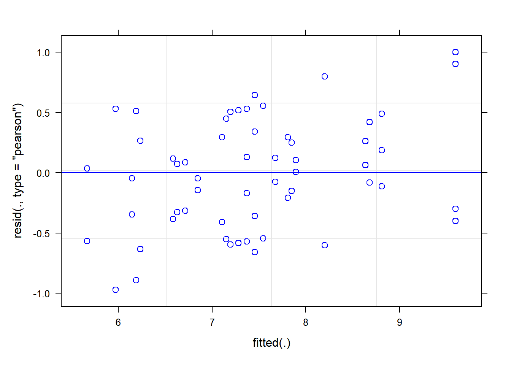
5 Goldie’s vision
Cronly-Dillon and Muntz (1965; J. Exp. Biol 42: 481-493) used the optomotor response to measure color vision in the goldfish. Here we will fit a model to the data and include the full set of wavelengths tested. Each of 5 fish was tested at all wavelengths in random order. A large value of sensitivity indicates that the fish can detect a low light intensity.
An important feature of the optomotor response is that fish don’t habituate, and it is unlikely that a measurement of visual sensitivity under one wavelength would carry over and have an effect on later measurements at another wavelength. The data are in the file goldfish.csv.
5.1 Read and examine the data
Read the data from the file, and view the first few lines to make sure it was read correctly.
Use an interaction plot to compare the responses of individual fish across the different light wavelength treatments.
What type of experimental design was used?* This will determine the linear mixed model to use when fitting the data.
5.2 Fit a linear mixed-effects model
Fit a linear mixed-effects model to the data. This will work using
lmer(), but R will give you the message: “boundary (singular) fit”. The reason will become clearer below. Meantime, proceed as though all is well.Plot the fitted (predicted) values**. The difference between the predicted and observed values for each fish represent the residuals.
What assumptions are you making in (1)? Create a plot of residuals against fitted values to check one of these assumptions.
Extract parameter estimates from the saved
lmer()object. Inspect the results for the fixed effects. The coefficients given have the same interpretation as in the case of a categorical variable analyzed usinglm()(arbitrarily, the light treatment “nm426” is set as the “control”).Inspect the output for the random effects. Once again we have two sources of random error in our mixed effects model. What are they? Which of them corresponds to the (Intercept) and which to the Residual in the output? Notice that the estimated standard deviation for one of the sources of variation is very small in this data set. This is the reason behind the “boundary (singular) fit” message. It is unlikely that the variance among fish really is zero, but this data set is very small and low variance estimates can occur because of sampling error.
Generate the model-based estimates of the mean sensitivities for each wavelength.
Are the differences among wavelengths significant? Generate the ANOVA table for the
lmer()object. What effects are tested here, the random effects or the fixed effects?*** Interpret the ANOVA results.
*It is a “subjects-by-treatment” repeated measures design, since each fish is measured once under each treatment. It is essentially the same as a randomized complete block design (think of the individual fish as “blocks”).
**visreg() is preferred, because both the data and the fitted values are plotted. Note how the predicted values are very similar between fish. This indicates that there was very little estimated variance among individual fish in this study.
***Generally, only the fixed effects are tested in an ANOVA table. It is possible to test the null hypothesis of no variance in a random effect using lmerTest, but I’ve yet to think of a compelling reason why one would ever do this.
5.3 Suggested solutions
All lines below beginning with double hashes are R output.
Read and examine the data.
x <- read.csv("data/goldfish.csv",
stringsAsFactors = FALSE)
head(x) fish wavelength sensitivity
1 fish1 nm426 0.94
2 fish2 nm426 0.94
3 fish3 nm426 0.94
4 fish4 nm426 1.14
5 fish5 nm426 0.94
6 fish1 nm462 1.09Fit a linear mixed effects model
The model assumes normally distributed residuals with equal variance for all fitted values. The method also assumes that the random intercepts among individual fish are normally distributed. The method also assumes a random sample of groups (fish) and no carry-over between measurements made on the same fish.
# 1. Fit mixed effects model.
z <- lmer(sensitivity ~ wavelength + (1|fish), data = x)# 2. This plots the fitted values separately for each fish.
# Is the response similar for each fish across wavelengths?
visreg(z, xvar = "wavelength", by = "fish",
scales = list(rot = 90))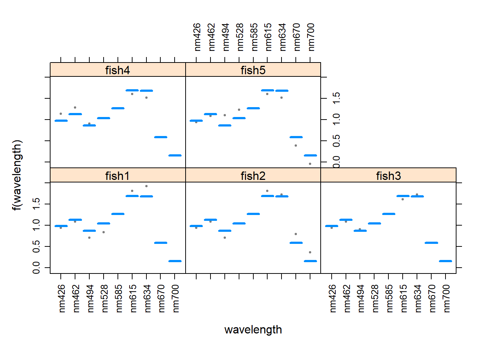
# 3. Test assumptions
plot(z)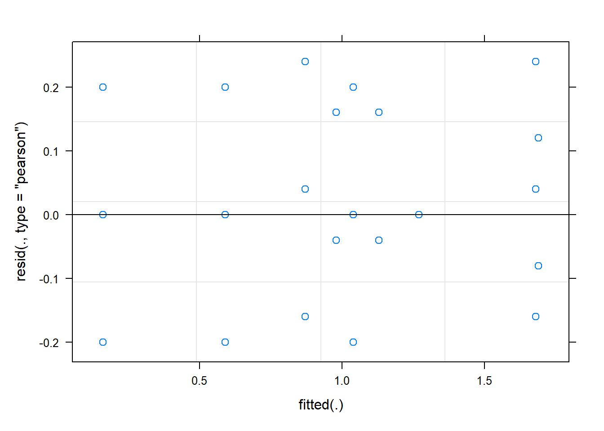
# 4. Extract parameter estimates
# There will be lots of results for this summary
summary(z)Linear mixed model fit by REML. t-tests use Satterthwaite's method [
lmerModLmerTest]
Formula: sensitivity ~ wavelength + (1 | fish)
Data: x
REML criterion at convergence: -32.2
Scaled residuals:
Min 1Q Median 3Q Max
-1.5811 -0.3162 0.0000 0.3162 1.8974
Random effects:
Groups Name Variance Std.Dev.
fish (Intercept) 0.000 0.0000
Residual 0.016 0.1265
Number of obs: 45, groups: fish, 5
Fixed effects:
Estimate Std. Error df t value Pr(>|t|)
(Intercept) 0.98000 0.05657 36.00000 17.324 < 2e-16 ***
wavelengthnm462 0.15000 0.08000 36.00000 1.875 0.068923 .
wavelengthnm494 -0.11000 0.08000 36.00000 -1.375 0.177629
wavelengthnm528 0.06000 0.08000 36.00000 0.750 0.458128
wavelengthnm585 0.29000 0.08000 36.00000 3.625 0.000886 ***
wavelengthnm615 0.71000 0.08000 36.00000 8.875 1.36e-10 ***
wavelengthnm634 0.70000 0.08000 36.00000 8.750 1.94e-10 ***
wavelengthnm670 -0.39000 0.08000 36.00000 -4.875 2.20e-05 ***
wavelengthnm700 -0.82000 0.08000 36.00000 -10.250 3.20e-12 ***
---
Signif. codes: 0 '***' 0.001 '**' 0.01 '*' 0.05 '.' 0.1 ' ' 1
Correlation of Fixed Effects:
(Intr) wvl462 wvl494 wvl528 wvl585 wvl615 wvl634 wvl670
wvlngthn462 -0.707
wvlngthn494 -0.707 0.500
wvlngthn528 -0.707 0.500 0.500
wvlngthn585 -0.707 0.500 0.500 0.500
wvlngthn615 -0.707 0.500 0.500 0.500 0.500
wvlngthn634 -0.707 0.500 0.500 0.500 0.500 0.500
wvlngthn670 -0.707 0.500 0.500 0.500 0.500 0.500 0.500
wvlngthn700 -0.707 0.500 0.500 0.500 0.500 0.500 0.500 0.500
optimizer (nloptwrap) convergence code: 0 (OK)
boundary (singular) fit: see ?isSingular# 6. Model-based estimates of the mean sensitivities
emmeans(z, "wavelength", data = x) wavelength emmean SE df lower.CL upper.CL
nm426 0.98 0.0566 36 0.8653 1.095
nm462 1.13 0.0566 36 1.0153 1.245
nm494 0.87 0.0566 36 0.7553 0.985
nm528 1.04 0.0566 36 0.9253 1.155
nm585 1.27 0.0566 36 1.1553 1.385
nm615 1.69 0.0566 36 1.5753 1.805
nm634 1.68 0.0566 36 1.5653 1.795
nm670 0.59 0.0566 36 0.4753 0.705
nm700 0.16 0.0566 36 0.0453 0.275
Degrees-of-freedom method: kenward-roger
Confidence level used: 0.95 # 7. ANOVA
anova(z)Type III Analysis of Variance Table with Satterthwaite's method
Sum Sq Mean Sq NumDF DenDF F value Pr(>F)
wavelength 9.5111 1.1889 8 36 74.306 < 2.2e-16 ***
---
Signif. codes: 0 '***' 0.001 '**' 0.01 '*' 0.05 '.' 0.1 ' ' 16 Yukon yarrow
The Kluane project experimentally investigated the effects of fertilization and herbivory on vegetation dynamics in the boreal forest ecosystem of Kluane National Park in the Yukon (Krebs, C.J., Boutin, S. & Boonstra, R., eds (2001a) Ecosystem dynamics of the Boreal Forest. The Kluane Project. Oxford University Press, New York). The data here are from a study of the effects of plant resources and herbivory on the defensive chemistry of understory plant species.
Each of sixteen 5x5 m plots was randomly assigned one of four treatments:
surrounded by a fence exclosure to exclude herbivores;
fertilized with N-P-K fertilizer;
fenced and fertilized; and
untreated control.
Each of the 16 plots was then divided in two. One side of each plot (randomly chosen) received the treatment continually over the 20 years of study. The other half of each plot received the treatment for the first ten years, after which it was left to revert to its untreated state.
The data to be analyzed here record the concentration of phenolics (a crude measure of plant defense compounds) in yarrow (Achillea millefolium), a herb common in the plots. The measurement units are mg Tannic Acid Equivalents per g dry weight. The data are in the file “kluane.csv”.
6.1 Visualize the data
Read the data from the file.
Inspect the first few lines of data. Plot and treatment are self-explanatory. Treatment is given as a single variable with four levels (let’s stick with this approach rather than model as two variables, enclosure and fertilizer, with a 2x2 factorial design). Duration indicates whether the half-plots received the treatment for the full 20 years or whether the treatment was stopped (“reversed”) after 10 years. The variable “phen.ach” is the concentration of phenolics in yarrow.
Draw a graph to illustrate the concentrations of phenolics in yarrow in the different treatment and duration categories. There aren’t many data points in each combination of treatment and duration levels, so a strip chart by groups is probably a better choice than a box plot by groups.
Optional challenge question (moderately difficult): A flaw with the strip chart method is that it doesn’t indicate that data points from the same plot (adjacent half-plots) are paired. Can you figure out how to add line segments to connect paired points?
6.2 Fit a linear mixed-effects model
What type of experimental design was used?* This will determine the linear mixed model to fit to the data.
Fit a linear mixed model to the data without an interaction between treatment and duration. Use the log of phenolics as the response variable, as the log-transformation improved the fit of the data to linear model assumptions.
Visualize the model fit to the data. Use the by = argument with visreg() to separate panels by duration (if xvar is treatment) or treatment (if xvar is duration). visreg() won’t preserve the pairing, but will allow you to inspect residuals.
Now repeat the model fitting, but this time include the interaction between treatment and duration. Visualize the model fit to the data. What is the most noticeable difference between the two model fits, one with the interaction and the other without? Describe what including the interaction term “allows” that the model without an interaction term does not. Judging by eye, which model appears to fit the data best?
Use the diagnostic plot to check a key assumption of linear mixed models for the model including the interaction term.
Estimate the parameters of the linear model (including interaction) using the fitted model object. Notice that there are now many coefficients in the table of fixed effects. In principle, these can be understood by examining how R models terms behind the scenes, but the task is made more challenging with two factors and an interaction. It might be more useful to use emmeans() instead to obtain model fitted means, which are more readily interpretable.
In the output from the previous step, you will see two quantities given for “Std.Dev” under the label “Random effects”. Explain what these quantities refer to.
Use emmeans() to estimate the model fitted means for all combinations of the fixed effects.
Generate the ANOVA table for the fixed effects. Which terms were statistically significant?
By default, lmerTest will test model terms using Type 3 sums of squares (the “drop one” approach) rather than sequentially (Type 1), which is the default in lm(). Repeat the ANOVA table using Type 1 instead. Are the results any different?**
- The experiment used a split-plot design, in which whole plots were randomly assigned different treatments, and then different levels of a second treatment (duration) were assigned to plot halves.
** There should be no difference because the design is completely balanced.
6.2 Suggested solutions
Read and examine the data.
A good strategy is to order the treatment categories to put controls first. This will make the output from the linear model fit more useful.
# 1. read data
x <- read.csv("data/kluane.csv",
stringsAsFactors = FALSE)
# 2. Inspect
head(x) plot treatment duration phen.ach
1 1 control permanent 43.97
2 1 control reverse 36.50
3 2 fertilizer permanent 14.21
4 2 fertilizer reverse 28.64
5 3 control permanent 42.38
6 3 control reverse 44.44# 3. Grouped strip chart
# First, reorder treatment categories
x$treatment <- factor(x$treatment,levels=c("control","exclosure","fertilizer","both"))
ggplot(data = x,
aes(y = log(phen.ach),
x = treatment,
fill = duration,
color = duration)) +
geom_point(size = 3, position = position_dodge(width = 0.7)) +
labs(x = "Treatment", y = "log phenolics concentration") +
theme_classic()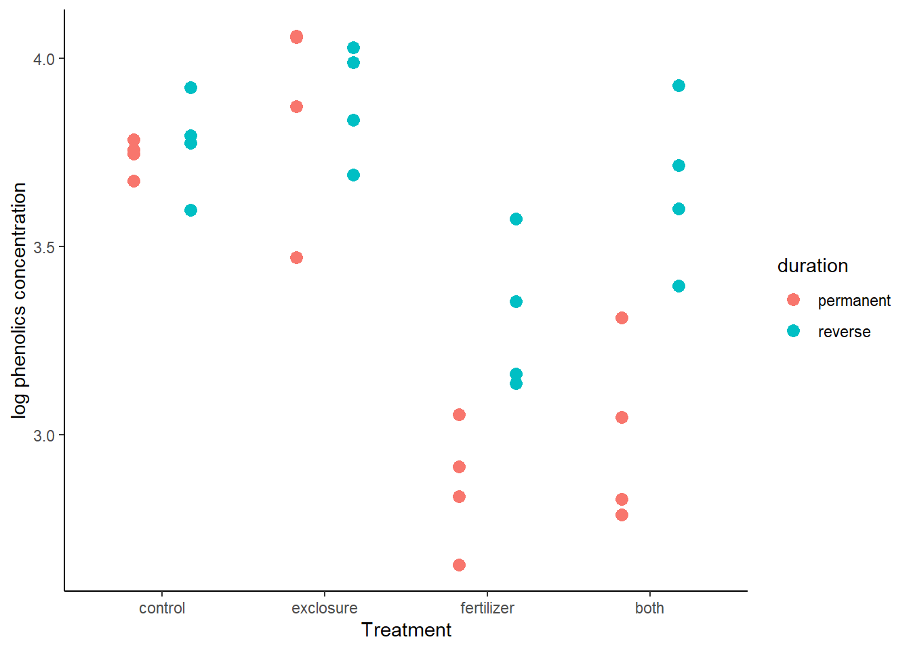
# 4. (Bonus) One solution is to plot paired data separately in multiple panels
ggplot(data = x,
aes(y = log(phen.ach),
x = duration,
fill = duration,
color = duration)) +
geom_line(aes(group = plot), col = "black") +
geom_point(size = 3, position = position_dodge(width = 0.7), show.legend = FALSE) +
facet_wrap(~ treatment, nrow = 1) +
labs(x = "Treatment", y = "log phenolics concentration") +
theme(aspect.ratio = 2)+
theme_classic()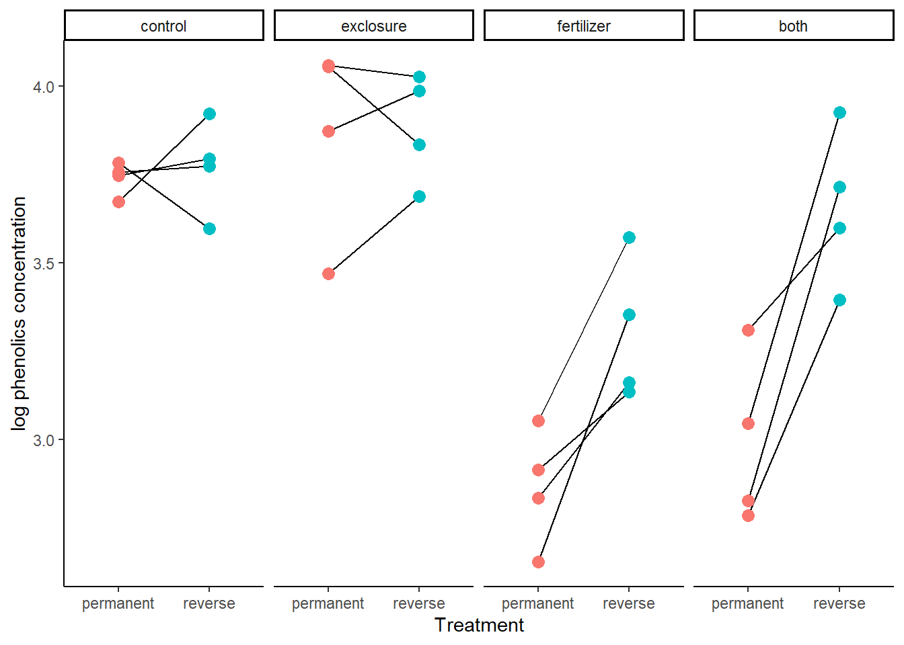
Fit a linear mixed effects model. The fixed effects are “treatment” and “duration”, whereas “plot” is the random effect. When fitting an interaction, the magnitudes of differences between treatment levels can differ between duration levels.
Because a random effect is also present (plot), the coefficients table will show estimates of variance for two sources of random variation. One is the variance of the residuals of the fitted model. The second is the variance among the (random) plot intercepts.
# 2. Fit mixed effects model - no interaction
z <- lmer(log(phen.ach) ~ treatment + duration + (1|plot), data=x)# 3. Visualize. Here, a two-panel plot is used.
visreg(z, xvar = "treatment", by = "duration", overlay = TRUE,
ylab="Log phenolics concentration", data = x)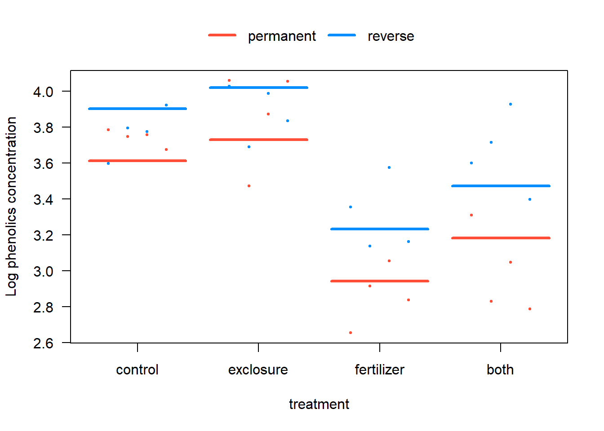
# 4. Include interaction and visualize again
z.int <- lmer(log(phen.ach) ~ treatment * duration + (1|plot), data=x)
visreg(z.int, xvar = "treatment", by = "duration", overlay = TRUE,
ylab="Log phenolics concentration", data = x)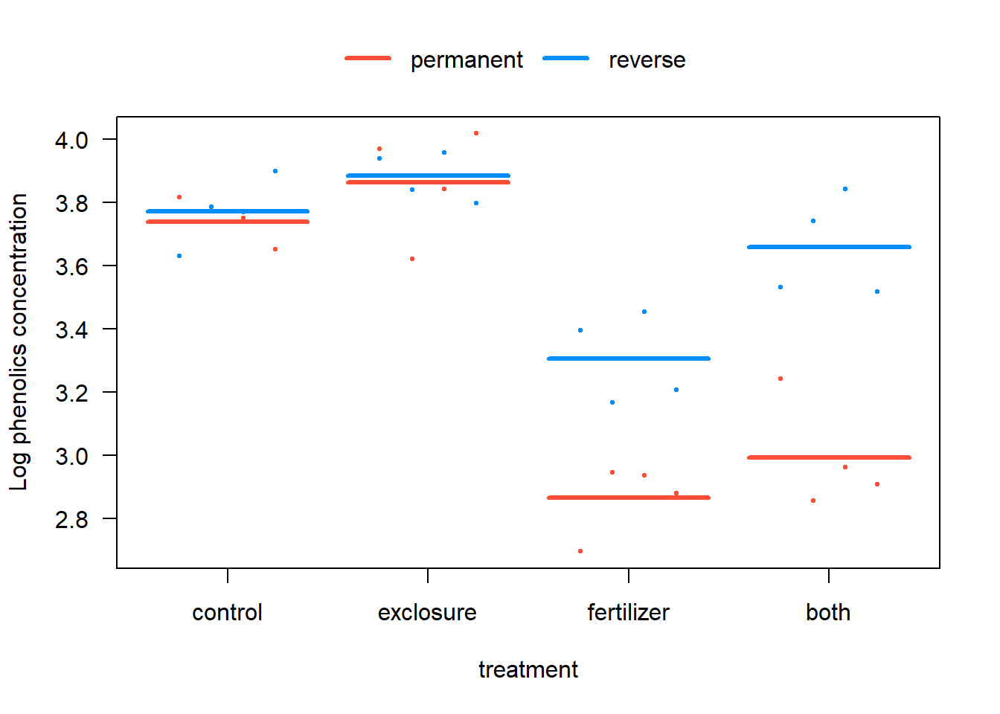
# 5. Plot to test homogeneity of variances
# Do you think the residuals are Gaussian?
plot(z.int)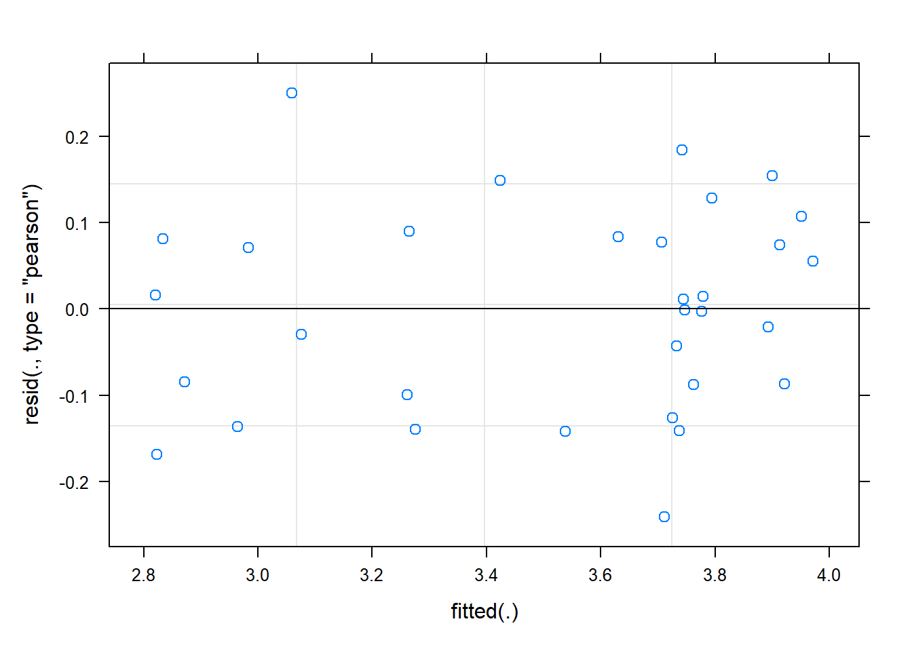
# 6. Coefficients
summary(z.int)Linear mixed model fit by REML. t-tests use Satterthwaite's method [
lmerModLmerTest]
Formula: log(phen.ach) ~ treatment * duration + (1 | plot)
Data: x
REML criterion at convergence: -1.4
Scaled residuals:
Min 1Q Median 3Q Max
-1.55278 -0.58471 0.03425 0.52871 1.61347
Random effects:
Groups Name Variance Std.Dev.
plot (Intercept) 0.01292 0.1137
Residual 0.02413 0.1553
Number of obs: 32, groups: plot, 16
Fixed effects:
Estimate Std. Error df t value
(Intercept) 3.74031 0.09624 21.39871 38.865
treatmentexclosure 0.12388 0.13610 21.39871 0.910
treatmentfertilizer -0.87526 0.13610 21.39871 -6.431
treatmentboth -0.74732 0.13610 21.39871 -5.491
durationreverse 0.03190 0.10984 12.00000 0.290
treatmentexclosure:durationreverse -0.01122 0.15534 12.00000 -0.072
treatmentfertilizer:durationreverse 0.40963 0.15534 12.00000 2.637
treatmentboth:durationreverse 0.63438 0.15534 12.00000 4.084
Pr(>|t|)
(Intercept) < 2e-16 ***
treatmentexclosure 0.37284
treatmentfertilizer 2.06e-06 ***
treatmentboth 1.78e-05 ***
durationreverse 0.77648
treatmentexclosure:durationreverse 0.94362
treatmentfertilizer:durationreverse 0.02169 *
treatmentboth:durationreverse 0.00152 **
---
Signif. codes: 0 '***' 0.001 '**' 0.01 '*' 0.05 '.' 0.1 ' ' 1
Correlation of Fixed Effects:
(Intr) trtmntx trtmntf trtmntb drtnrv trtmntx: trtmntf:
trtmntxclsr -0.707
trtmntfrtlz -0.707 0.500
treatmntbth -0.707 0.500 0.500
duratinrvrs -0.571 0.404 0.404 0.404
trtmntxcls: 0.404 -0.571 -0.285 -0.285 -0.707
trtmntfrtl: 0.404 -0.285 -0.571 -0.285 -0.707 0.500
trtmntbth:d 0.404 -0.285 -0.285 -0.571 -0.707 0.500 0.500 # 8. Model fitted means
emmeans(z.int, specs = c("treatment", "duration"), data = x) treatment duration emmean SE df lower.CL upper.CL
control permanent 3.74 0.0962 21.4 3.54 3.94
exclosure permanent 3.86 0.0962 21.4 3.66 4.06
fertilizer permanent 2.87 0.0962 21.4 2.67 3.06
both permanent 2.99 0.0962 21.4 2.79 3.19
control reverse 3.77 0.0962 21.4 3.57 3.97
exclosure reverse 3.88 0.0962 21.4 3.68 4.08
fertilizer reverse 3.31 0.0962 21.4 3.11 3.51
both reverse 3.66 0.0962 21.4 3.46 3.86
Degrees-of-freedom method: kenward-roger
Results are given on the log (not the response) scale.
Confidence level used: 0.95 # 9. ANOVA tables
anova(z.int) # Type 3 sums of squares is default in lmerTestType III Analysis of Variance Table with Satterthwaite's method
Sum Sq Mean Sq NumDF DenDF F value Pr(>F)
treatment 1.57355 0.52452 3 12 21.7365 3.848e-05 ***
duration 0.67324 0.67324 1 12 27.8998 0.000194 ***
treatment:duration 0.60739 0.20246 3 12 8.3903 0.002822 **
---
Signif. codes: 0 '***' 0.001 '**' 0.01 '*' 0.05 '.' 0.1 ' ' 1# 10. Type 1 instead
# NB same as for type 3 due to balanced design!
anova(z.int, type = 1)Type I Analysis of Variance Table with Satterthwaite's method
Sum Sq Mean Sq NumDF DenDF F value Pr(>F)
treatment 1.57355 0.52452 3 12 21.7365 3.848e-05 ***
duration 0.67324 0.67324 1 12 27.8998 0.000194 ***
treatment:duration 0.60739 0.20246 3 12 8.3903 0.002822 **
---
Signif. codes: 0 '***' 0.001 '**' 0.01 '*' 0.05 '.' 0.1 ' ' 1Harper Adams Data Science

This module is a part of the MSc in Data Science for Global Agriculture, Food, and Environment at Harper Adams University, led by Ed Harris.